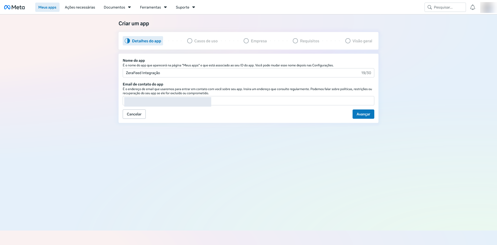
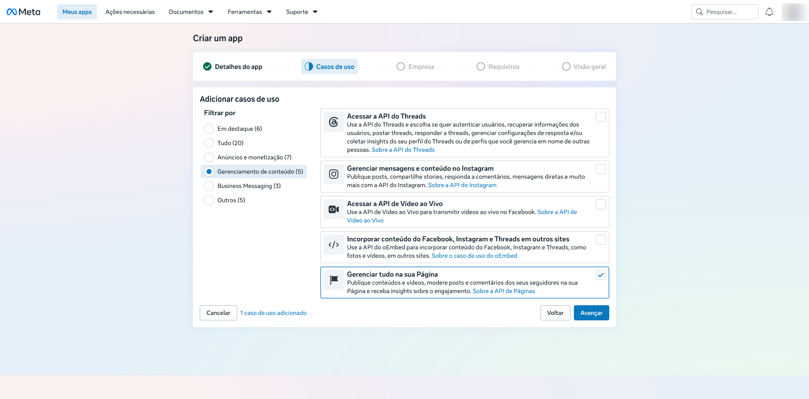
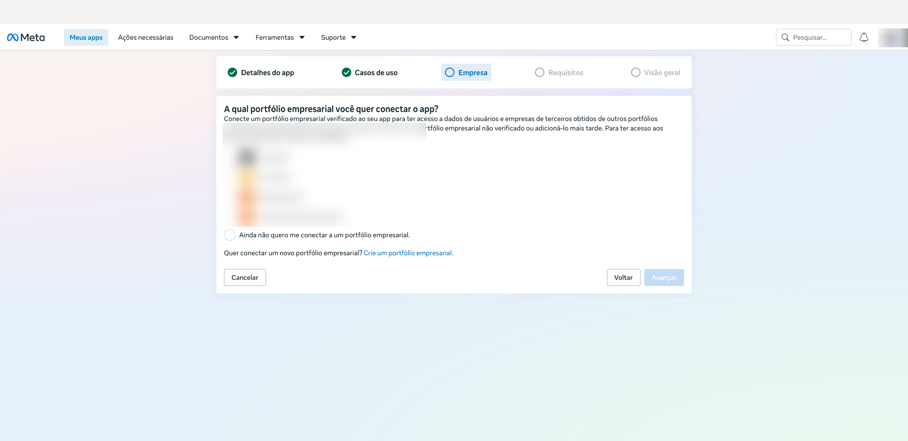
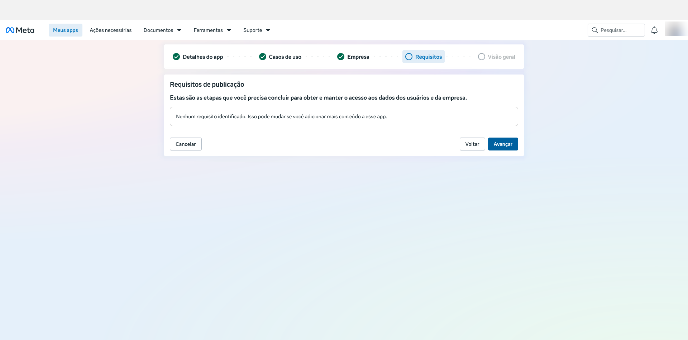
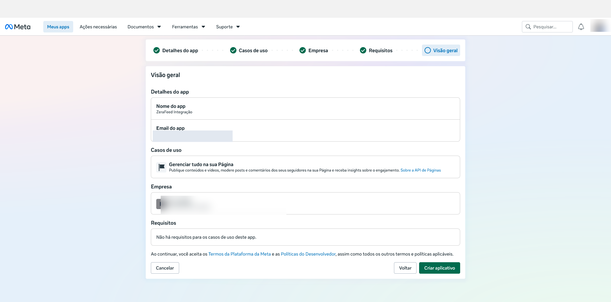
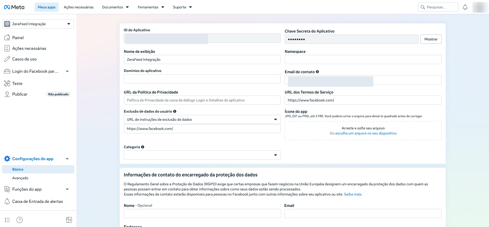
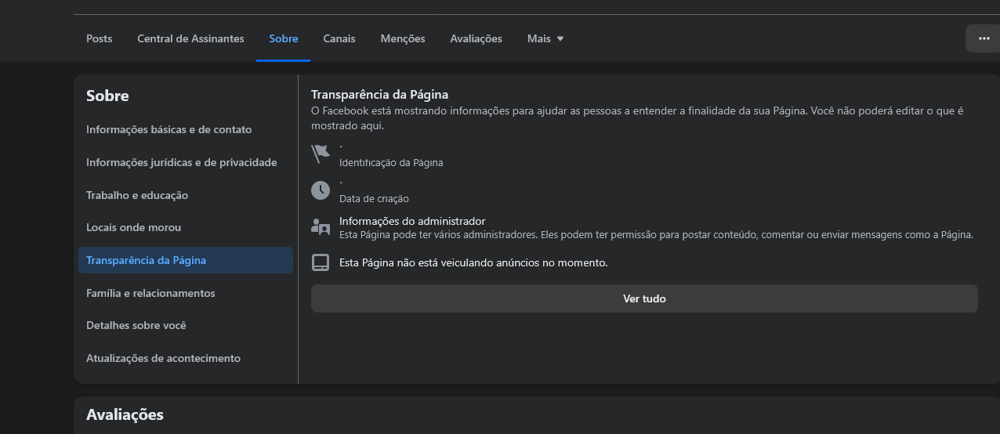
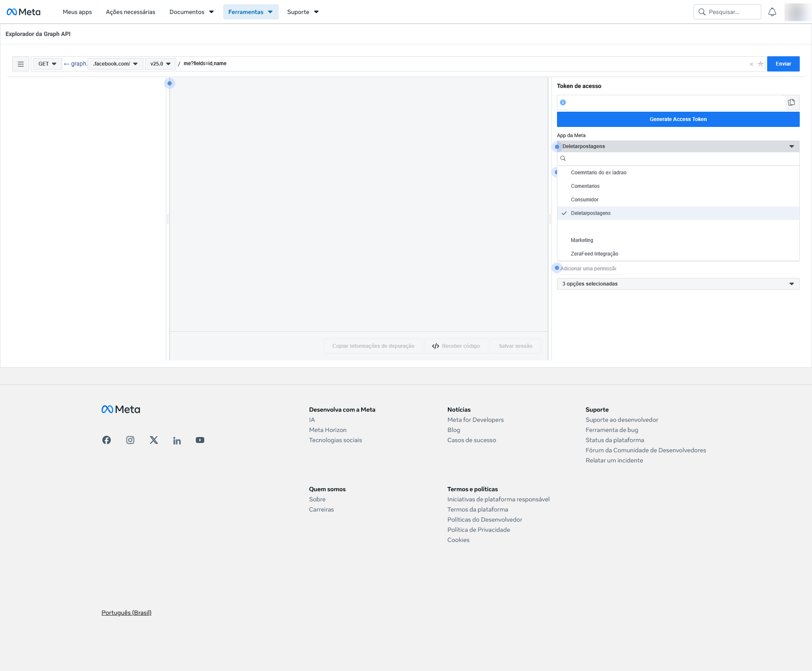
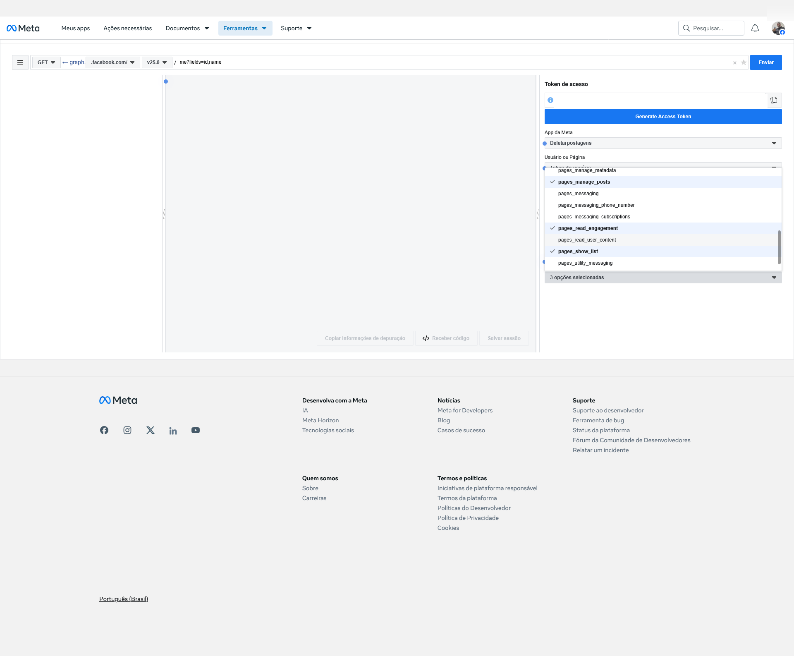

Este documento apresenta o procedimento oficial para vincular uma Página do Facebook ao ZeraFeed. A integração utiliza a Graph API da Meta em conformidade com os Termos da Plataforma vigentes. O processo é realizado uma única vez por Página e leva aproximadamente quinze minutos.
O aplicativo é a identidade oficial que representa você perante a Meta. A criação é realizada uma única vez e o mesmo aplicativo permanece disponível para todas as suas Páginas.
Efetue login em developers.facebook.com utilizando a mesma conta do Facebook que administra a Página a ser conectada. Caso este seja o primeiro acesso, o portal apresentará um assistente rápido para habilitação da conta como desenvolvedor, mediante confirmação de e-mail e aceite dos termos. O procedimento é gratuito e não impõe qualquer obrigação contratual.
Abrir Meta for DevelopersNo portal, acesse Meus Apps e acione o botão Criar App. Será apresentado um assistente composto por cinco etapas sequenciais, detalhadas a seguir.
Informe uma denominação para o aplicativo, a exemplo de ZeraFeed Integração, e confirme o e-mail de contato. Este endereço será utilizado pela Meta para comunicações oficiais relativas ao aplicativo.

Ao final, acione Avançar.
No filtro lateral, selecione Gerenciamento de conteúdo. Dentre as opções apresentadas, marque exclusivamente Gerenciar tudo na sua Página. Esta seleção habilita o conjunto de permissões necessárias à operação do ZeraFeed. Nenhuma outra opção deve ser marcada nesta etapa.

Nesta tela, o portal solicitará a vinculação do aplicativo a um portfólio empresarial. Selecione Ainda não quero me conectar a um portfólio empresarial. A vinculação torna-se exigível somente na hipótese de publicação do aplicativo para uso por terceiros, situação distinta do procedimento aqui contemplado.

Tela de caráter meramente informativo. O portal exibirá a mensagem Nenhum requisito identificado, o que confirma a viabilidade da configuração escolhida. Acione Avançar.

O portal apresentará o resumo de todas as configurações realizadas. Após conferência, acione Criar aplicativo. Poderá ser solicitada a senha da conta do Facebook para confirmação da operação.

Com o aplicativo criado, o portal apresentará o painel de administração. No menu lateral esquerdo, acesse Configurações do App e, em seguida, a subseção Básico. Nesta página encontram-se as duas credenciais que deverão ser copiadas e armazenadas em local seguro para uso na Parte 04 deste procedimento.

O ID da Página é o identificador numérico exigido pelo ZeraFeed no primeiro dos dois campos de conexão. Trata-se de uma informação pública, exibida diretamente na seção institucional da própria Página.
Navegue até a Página que será conectada ao ZeraFeed e acesse a aba Sobre, disponível no menu superior da Página.
No menu lateral esquerdo da aba Sobre, selecione a opção Transparência da Página. O painel exibirá um bloco denominado Identificação da Página, contendo a sequência numérica que constitui o ID.

Na tela acima, o ID corresponde ao número exibido logo acima do rótulo Identificação da Página. Trata-se de uma sequência de aproximadamente dezesseis dígitos, no formato ilustrado a seguir.
Registre este valor. Ele será inserido no campo ID da Página do formulário de conexão do ZeraFeed, apresentado na Parte 05 deste documento.
O Token de Acesso é a credencial que autoriza o ZeraFeed a operar sobre sua Página em seu nome, respeitando estritamente as permissões que você conceder.
Ferramenta oficial disponibilizada pela Meta para geração assistida de tokens. Acesse mediante o link a seguir e mantenha a aba aberta durante toda a Parte 03.
Abrir Graph API ExplorerNo painel de configuração situado à direita da tela, localize o rótulo App da Meta. Acione o campo suspenso e, na lista apresentada, selecione o aplicativo criado na Parte 01 (a exemplo de Deletarpostagens ou ZeraFeed Integração).

Ainda no painel à direita, localize o campo Adicionar uma permissão. Ao acioná-lo, será apresentada a relação completa das permissões disponíveis, agrupadas por escopo. Marque as três permissões relacionadas a seguir.

Após a marcação, o campo de resumo exibirá a indicação 3 opções selecionadas, o que confirma a correta configuração do escopo.
Concluída a configuração, acione o botão azul Generate Access Token, localizado imediatamente abaixo do campo do token. A plataforma apresentará janela modal de autorização oficial do Facebook, na qual as permissões solicitadas deverão ser concedidas.
Após a autorização, o token será apresentado no campo Token de acesso, iniciando pela sequência EAA. Selecione integralmente o conteúdo do campo mediante o atalho Ctrl + A e copie com Ctrl + C. A atenção quanto à cópia integral é essencial, uma vez que a supressão acidental de caracteres compromete o funcionamento do token nas etapas subsequentes.
O token ora obtido possui validade aproximada de uma hora, período no qual deverá ser convertido na credencial permanente conforme procedimento descrito na Parte 04.
A conversão consiste em duas requisições sucessivas à Graph API que transformam o token temporário em uma credencial de validade indefinida, vinculada especificamente à Página.
Insira a URL abaixo no navegador, substituindo as expressões destacadas pelos respectivos valores obtidos anteriormente. O conteúdo deve ser transmitido em linha única, sem espaços intermediários.
A resposta conterá o campo access_token com um novo valor. Registre-o para uso imediato.
Com o token de longa duração em mãos, insira no navegador a URL a seguir, promovendo a substituição indicada.
A resposta apresentará a relação de todas as Páginas administradas pela sua conta. Para cada Página, localize o campo access_token correspondente. Este é o Token Permanente da Página, que será inserido no ZeraFeed.
Com o ID da Página e o Token Permanente registrados, a conexão é finalizada em poucos segundos no painel do sistema.
Acesse o menu Conexões no ZeraFeed e localize o formulário Conectar nova Página. A interface é apresentada conforme a reprodução abaixo.
Insira o identificador numérico obtido na Parte 02. Exemplo: 1628634290760049.
Insira o token permanente obtido na Parte 04. Sequência iniciada por EAA e sem prazo de expiração.
Após acionar Conectar Página, o sistema validará o token junto à Graph API e adicionará a Página à sua lista de Páginas conectadas. A partir desse momento, todas as operações de gestão e limpeza estarão disponíveis no menu Limpeza.
Diretrizes de segurança e operação a serem observadas após a conclusão do procedimento.
A credencial concede controle administrativo pleno sobre a Página. Armazene-a em ambiente restrito e não a compartilhe.
A remoção do aplicativo nas configurações do Facebook invalida o token de forma imediata e definitiva.
A alteração da senha da conta administradora invalida a totalidade dos tokens vinculados. Neste caso, refaça as Partes 03 e 04 para gerar uma nova credencial e atualize-a no ZeraFeed.
Todo o procedimento observa integralmente os Termos da Plataforma da Meta. A integração via Graph API é o método oficial de automação reconhecido pela plataforma.